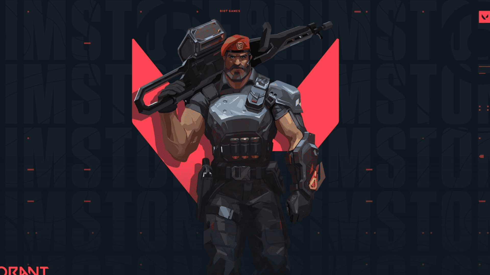
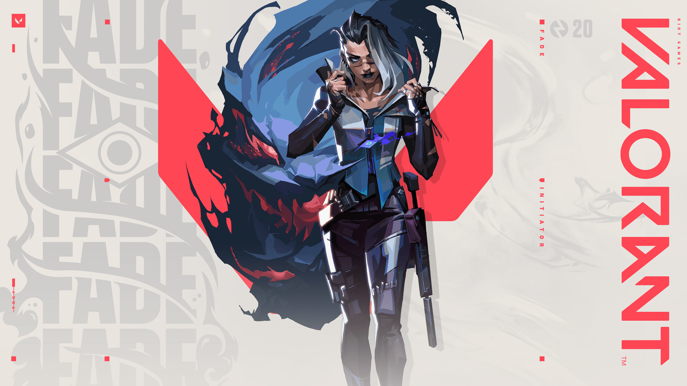
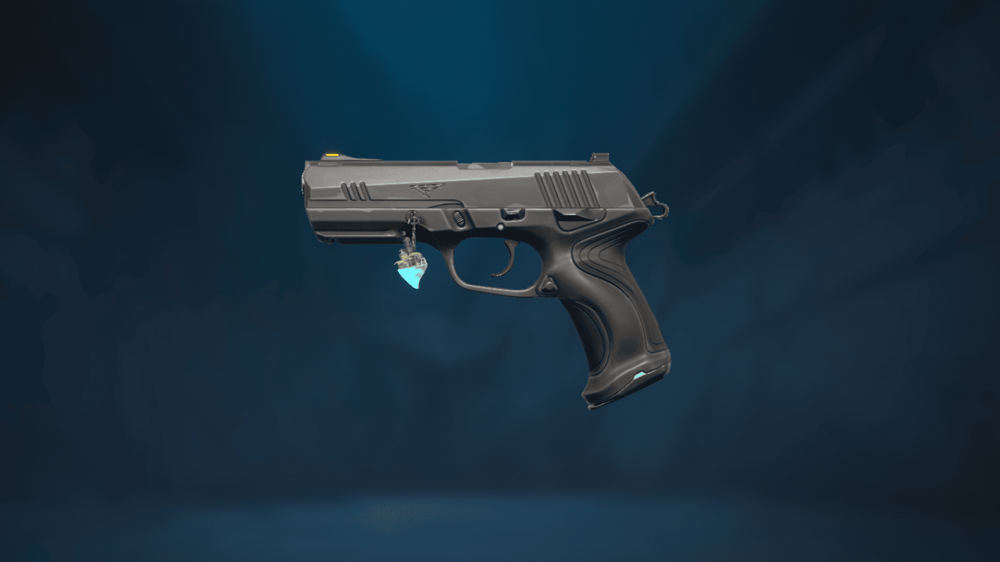
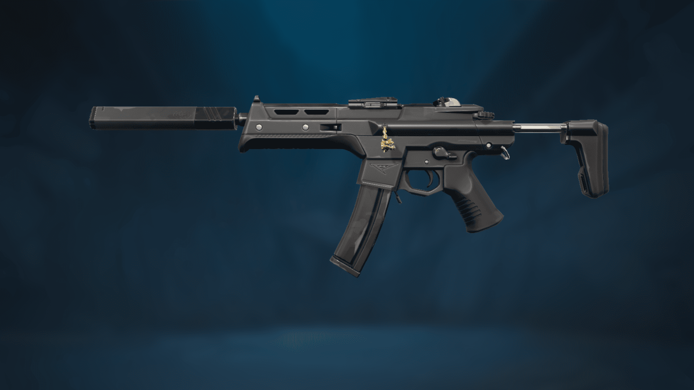
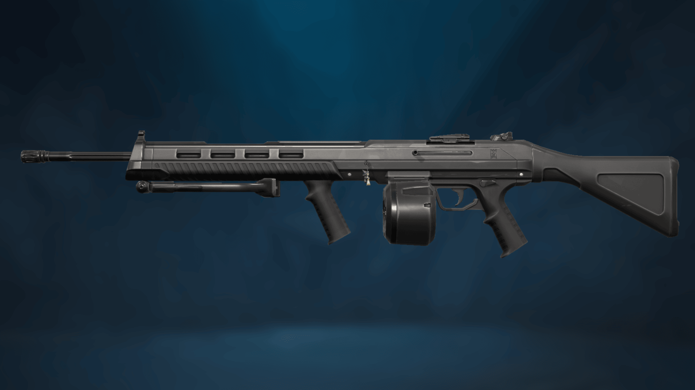

VALORANT adalah permainan video FPS (First-Person Shooter) taktis multipemain gratis yang dikembangkan dan diterbitkan oleh Riot Games, untuk Microsoft Windows. Pertama kali dinamakan dengan kode Project A pada Oktober 2019, permainan memulai periode beta tertutup dengan akses terbatas pada 7 April 2020, diikuti dengan perilisan resmi pada 2 Juni 2020. Pengembangan permainan dimulai pada 2014.
Valorant adalah penembak taktis berbasis tim dan penembak orang pertama yang diatur dalam dekat masa depan. Pemain bermain sebagai salah satu dari sekumpulan agen, karakter yang dirancang berdasarkan beberapa negara dan budaya di seluruh dunia. Dalam mode permainan utama, pemain ditugaskan ke tim menyerang atau bertahan dengan masing-masing tim memiliki lima pemain di dalamnya. Agen memiliki kemampuan unik, masing-masing membutuhkan biaya, serta kemampuan akhir unik yang membutuhkan pengisian melalui pembunuhan, kematian, atau aksi spike. Setiap pemain memulai setiap putaran dengan pistol "classic" dan satu atau lebih muatan "kemampuan khas". Senjata dan biaya kemampuan lainnya dapat dibeli menggunakan sistem ekonomi dalam permainan yang memberikan uang berdasarkan hasil putaran sebelumnya, pembunuhan apa pun yang menjadi tanggung jawab pemain, dan tindakan apa pun yang diambil dengan spike. Agen yang berbeda memungkinkan pemain menemukan lebih banyak cara untuk memasang Spike dan gaya pada musuh dengan scrappers, ahli strategi, dan pemburu dari setiap deskripsi
Agent

Bergabung dari AS, persenjataan orbital Brimstone memastikan pasukannya selalu berada di posisi menguntungkan. Kemampuannya untuk melancarkan bantuan secara presisi dari jarak jauh.
Berpakaian rapi dan bersenjata lengkap, desainer senjata dari Prancis, Chamber, menghalau penyerang dengan presisi yang mematikan. Dia memanfaatkan persenjataan untuk pertahanan.
Mewakili negara asalnya, Korea Selatan, gaya bertarung Jett yang tangkas dengan banyak pengelakan memungkinkannya mengambil risiko yang tak bisa dilakukan orang lain.
KAY/O adalah mesin perang yang diciptakan demi satu tujuan: melumpuhkan para radiant. Kekuatannya untuk menekan ability musuh melucuti kemampuan musuhnya untuk melawan balik.
Sang genius dari Jerman. Killjoy mengamankan medan perang dengan mudah, jika kerusakan dari peralatannya tak menghentikan musuh, debuff robot-robotnya akan mengatasinya.
Sesosok hantu dalam pikiran, berburu dalam bayangan, membutakan musuh, berteleportasi di penjuru medan tempur, lalu memberikan paranoid menghantui musuh.
Berasal dari Britania Raya, kekuatan bintang Phoenix terpampang dalam gaya bertarungnya, mengobarkan medan perang. Dia akan menerjang ke pertarungan sesuka hatinya.
Tertempa di jantung Meksiko, Reyna mendominasi kombat tunggal dan menjadi makin kuat tiap berhasil membunuh. Kepiawaiannya membuatnya sangat bergantung pada performa.
Benteng pertahanan dari Tiongkok, Sage memberikan rasa aman bagi dirinya dan timnya ke mana pun dia pergi. Bisa membangkitkan teman yang gugur dan menahan gempuran sengit.
Terlahir dari musim dingin abadi tundra Rusia, Busur sova yang terbuat khusus dan kemampuan pengintaian luar biasanya memastikan bahwa kamu bisa lari, tetapi tak bisa sembunyi.

Pemburu bayaran asal Turki, Fade, melepaskan kekuatan mimpi buruk kejam untuk merebut rahasia musuh. Dia memburu target serta menyingkap ketakutan mendalam dan kegelapan.
Agen dari Filipina, Neon, melesat maju dengan kecepatan yang mencengangkan, menyemburkan pancaran bioelektrik. Dia berlari untuk menyerang musuh lebih cepat dari kilat.
Agen asal Jepang Yoru melubangi realitas untuk menyusup ke wilayah musuh tanpa terlihat. Dengan menggunakan tipuan dan agresi yang seimbang untuk menghabisi musuh.
Seorang ahli kimia dari Amerika, Viper mengerahkan sejumlah perangkat kimia beracun untuk mengendalikan medan perang dan menghalangi pandangan musuh yang mengganggu musuh.
Weapon

CLASSIC
Tembakan primernya menghasilkan tembakan presisi saat diam di tempat dan dilengkapi juga dengan mode rentetan tembakan alt untuk jarak dekat.
SHORTY
Senapan gentel laras pendek yang lincah dan mematikan dalam jarak dekat, tetapi hanya bisa menembak dua kali sebelum perlu diisi ulang. Baik dipasangkan dengan senjata jarak jauh.
FRENZY
Pistol mesin ringan yang unggul untuk menembak sambil bergerak. Laju tembakannya yang tinggi bisa sulit dikendalikan, jadi tembak sedikit-sedikit dalam jarak menengah.
GHOST
Ghost akurat dan memiliki magasin besar jika kamu meleset. Target yang lebih jauh memerlukan laju tembakan yang terkendali. Segera tekan pelatuk saat kamu melihat musuh.
SHERIFF
Peluru berdaya rusak tingginya menghasilkan rekoil yang besar dan memerlukan keahlian untuk dikuasai.
STINGER
SMG ini lebih ampuh pada jarak menengah sampai jarak jauh dibanding lainnya yang setara, tetapi memiliki laju tembakan dan mobilitas yang lebih rendah.

SPECTRE
Senjata serbabisa dengan keseimbangan yang baik antara kerusakan, laju tembakan, dan akurasi, pada jarak dekat maupun menengah.
BUCKY
Berat tetapi stabil, tembakan primer Bucky pas untuk mempertahankan sudut sempit atau menerjang dalam jarak dekat.
JUDGE
Judge adalah senjata yang stabil saat penembaknya diam di tempat, tetapi sulit dikendalikan saat menembak cepat. Judge juga dapat melontarkan beberapa peluru dalam sekali tembak.
BULLDOG
Monster ampuh jika kamu bisa mengendalikan tembakanmu. Tembakan alt memungkinkanmu membidik dan memuntahkan rentetan peluru akurat pada siapa pun yang mengadangmu pada jarak menengah sampai jarak jauh.
GUARDIAN
Senapan andalan penembak jitu. Relatif lebih berat dan kurang lincah dibandingkan senapan lain, tetapi akurat dan kuat. Incar kepala musuh saat mereka muncul pada jarak menengah sampai jarak jauh.
PHANTOM
Gunakan full auto saat menghadapi siapa pun yang melawanmu pada jarak dekat dan rentetan terkendali untuk lawan dari mana saja. Terbaik untuk ditembakkan saat diam di tempat. Demage yang dihasilkan juga cukup besar untuk jarak jauh
VANDAL
Tembakan terus-menerus menurunkan stabilitas. Daya rusak tinggi Vandal terjaga meski pada jarak jauh dan menguntungkan bagi mereka yang mengincar kepala target dengan satu tembakan.
MARSHAL
Senapan penembak jitu aksi tuas dengan zoom tunggal yang bisa mengendalikan musuh agresif. Laju tembakan lambat berarti kamu harus mengenai sasaran atau menjadi sasaran empuk.
OPERATOR
Senapan penembak jitu kokang manual dengan zoom ganda berkekuatan tinggi. Sangat tidak lincah, tetapi menembakkan peluru yang sangat kuat dan mampu meluluhlantahkan tim dengan satu tembakan.

ARES
Magasin besar Ares berarti senjata ini unggul dalam tembakan acak atau menghasilkan kerusakan besar pada kelompok yang bergerombol.
ODIN
Tembakan acak berdaya rusak tinggi dengan stabilitas mengejutkan. Hujani lawan dengan peluru pada jarak dekat dan gunakan tembakan alt untuk menjadikan dirimu benteng bernyawa.
MELEE
Saat ragu atau kehabisan peluru, hajar mereka dengan ini. Membuatmu mampu berlari cepat, menghancurkan objek lebih cepat, atau menumbangkan musuh dengan sekali serang dari belakang dengan tembakan alt.
Maps
Salah satu elemen yang tidak terlepas dari game FPS seperti valorant adalah map. Bagi pemain wajib hukumnya untuk menguasai map. Tidak hanya mengetahui lokasi saja, tapi juga nama lokasi di tiap map. Hal ini penting agar komunikasi dengan rekan satu tim bisa mudah dan pergerakan tim juga menjadi lancar. Sehingga, setiap pemain tahu dimana lokasi yang pas untuk bersembunyi, rute mana yang harus diambil dan sebagainya. Setiap map juga memiliki layout yang unik, sehingga para pemain bisa dengan bebas dan berkreatif dalam beraksi. Map tersebut antara lain: